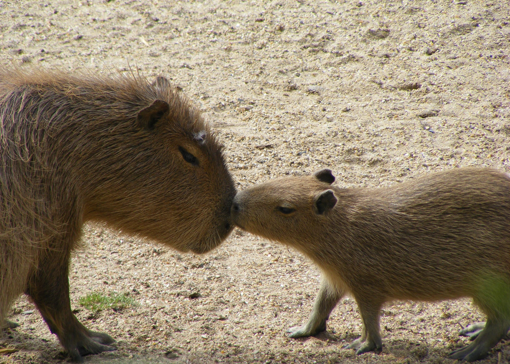
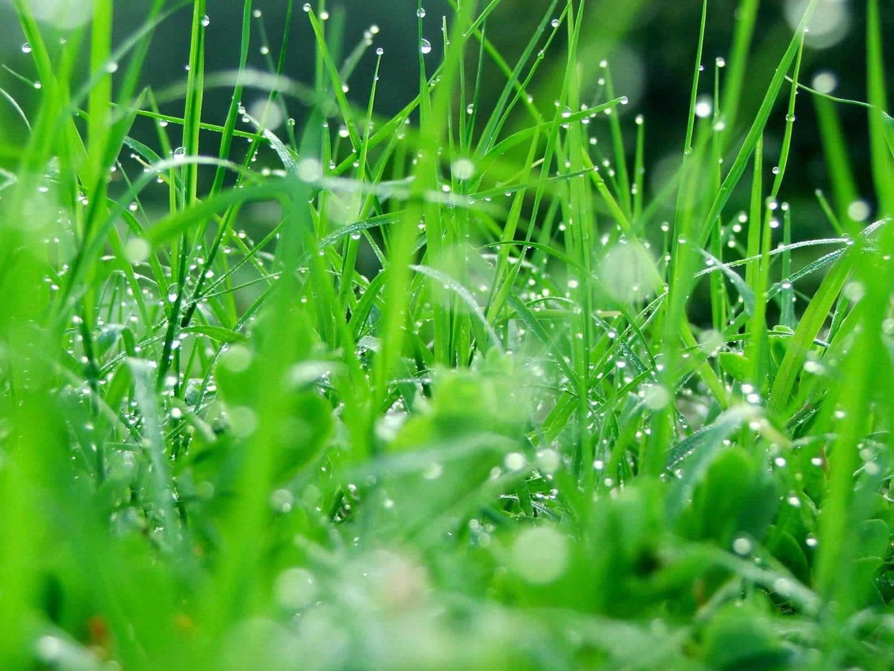
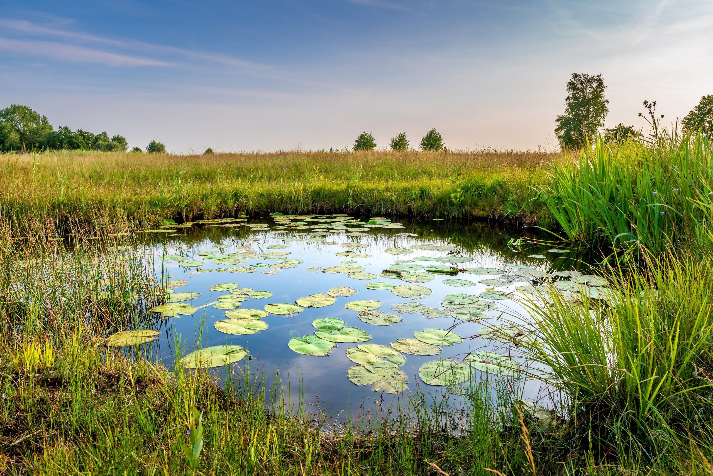
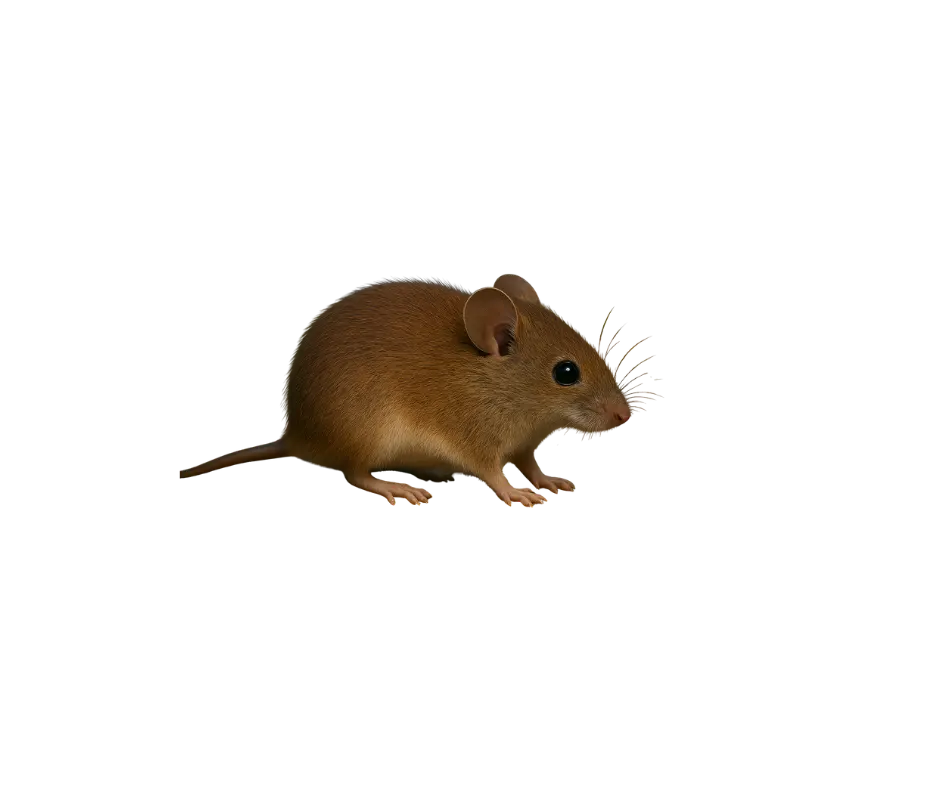
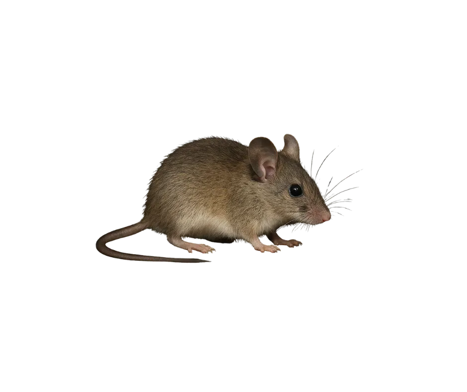
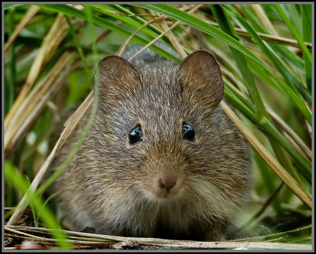
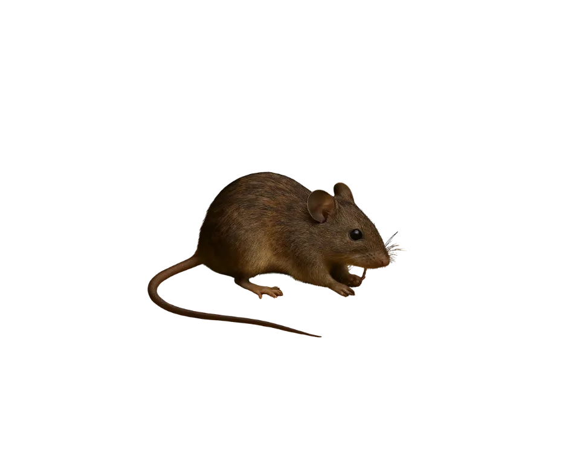

Museo De Paleontología SEMAHN
-
Inicio
-
Otras publicaciones
Roedores en Chiapas
Chiapas y el Pleistoceno: donde los roedores revelan los misterios del tiempo
Museo de Paleontología SEMAHN
Inicio
Otras publicaciones
Museo De Paleontología SEMAHN
Inicio
Otras publicaciones
Chiapas y el Pleistoceno: donde los roedores revelan los misterios del tiempo
El orden Rodentia es el grupo de micromamíferos más diverso, con cerca del 44% de todas las especies de mamíferos. En México existen unas 240 especies de roedores, 120 de ellas endémicas. Son altamente adaptables, presentes en casi todos los ecosistemas, y regiones del mundo. Los roedores han desarrollado diferentes adaptaciones morfológicas, pero en general, comparten como característica única, un par de incisivos superiores e inferiores, que crecen durante toda su vida. La ausencia de otros incisivos y caninos resulta en un espacio entre incisivos y molares, llamado diastema, donde retienen el alimento antes de masticarlo de nuevo.

En el registro fósil, los roedores aparecen en el Paleoceno en Asia, Europa y América del Norte. Durante el Eoceno, los roedores comenzaron a colonizar nuevos hábitats, para el Mioceno, ya estaban presentes en todos los continentes, excepto la Antártida. En Chiapas, los fósiles de roedores datan del Pleistoceno Superior. A la fecha se ha determinado cuatro especies de talla pequeña, Reytrodonthomys sp., Peromyscus sp., Sigmodon hispidus y Lyomis sp., y una especie de talla grande Neochoerus aesopi.
Los capibaras son un grupo de roedores que apareció en el mioceno. En el pasado existieron muchas especies, que habitaron tanto en América del Norte como América del Sur. En la actualidad solo existen dos especies Hydrochoerus hydrochoerus isthmius que habitan en América del Sur. Durante el Pleistoceno tardío, entre 600, 000 y 11, 700 años, en América del Norte vivió un capibara llamado Neochoerus aesopi, muy similar al capibara actual, pero de mayor tamaño. En México, restos fósiles de esta especie han sido hallados en Sonora, Jalisco, Michoacán, Zacatecas, San Luis Potosí, Estado de México, Puebla y Chiapas. En Chiapas, fósiles de N. aesopi fueron encontrados en el municipio de Villaflores, en sedimentos que fueron fechados en 11, 800 años de antigüedad. Los restos encontrados incluyen una mandíbula y un tercer molar superior de un ejemplar adulto y parte de la mandíbula de un ejemplar juvenil. Estos fósiles nos muestran la gran diversidad de animales que vivieron en el pasado, algunos muy diferentes a los que habitan en nuestro Estado en la actualidad.

El capibara gigante era un herbívoro, se alimentaba principalmente de pastos y otras plantas acuáticas. Su dieta variada le permitía adaptarse a diferentes hábitats acuáticos y terrestres.

El capibara gigante habitaba en ambientes acuáticos y semiacuáticos, como ríos, lagos y pantanos. Su hábitat variaba desde zonas ribereñas hasta humedales, lo que le permitía acceder a una amplia variedad de recursos alimenticios.

Reithrodontomys es un género de roedores que pertenecen a la familia Cricetidae. Agrupa a 21 especies nativas de América. Consiste en un pequeño ratón superficialmente similar a los ratones que se pueden hayar en viviendas. Una diferencia fácilmente apreciable es que los incisivos superiores presentan ranuras longitudinales. Los dientes y dentarios aislados pueden confundirse con los de Peromyscus.
Peromyscus es un género de roedores de la familia Cricetidae. Se distribuyen por América del Norte y América Central.


Sigmodon hispidus, conocido como el ratón hispido, es un roedor de la familia Cricetidae. Es nativo de América del Norte y Central, y se encuentra en una variedad de hábitats, incluyendo praderas, campos agrícolas y áreas urbanas. Este roedor es conocido por su pelaje áspero y su capacidad para adaptarse a diferentes entornos.
Lyomis es un género de roedores que pertenecen a la familia Heteromyidae.

Álvarez-Castañeda, S. T. (2024). Order Rodentia. In Mammals of North America - Volume 2 (pp. 1–654). Springer Nature Switzerland.
Montero Bagatella, S. H., & Cervantes Reza, F. A. (2024). Los roedores: animales fantásticos y dónde encontrarlos. Revista Digital Universitaria, 25(5). https://doi.org/10.22201/ceide.16076079e.2024.25.5.6